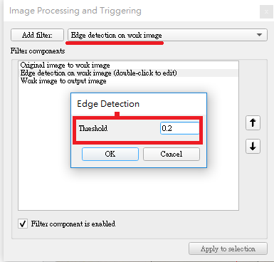
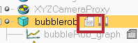

BubbleRob
1.建立BubbleRob本體
新增一個Sphere，X-size為0.2(單位為m)
在object common properties下的object special properties將Collidable、Measurable、Renderable、Detectable都打勾，將本體位置設定在Z軸(Along Z)0.02(須確認本體是照world移動)接著在選單雙擊Sphere將物件名稱改為BubbleRob就完成本體設定。
2.建立Proxmity sensor
在選單中建立一個Proximity sensor且選為Cone type將sensor利用旋轉功能在Around Y及Z輸入90位置為X-coord輸入0.1及Z-coord輸入0.12

接著設定sensor感應範圍，在選單點擊感測器符號開啟它的設定框，點擊show volume
parameter開啟選單設定Offset=0.005、Angle=30、Range=0.15
.png)
點擊Show detection parameters，將"Don't allow detections if distance smaller than"選項取消打勾。
將感測器名稱設定為bubbleRob_sensingNose，就完成感測器設定了。
在Scene hireachy(場景等級)將完成設定的sensor放在bubbleRob下最後將兩項物件Edit->"Make last selected object parent"連結成一個物件。
3.建立bubbleRob的輪子
建立一個cylinder尺寸為(0.08,0.08,0.02)，跟本體一樣將object common properties內的特殊屬性都打開，設定位置(0.05,0.1,0.04)和旋轉(-90,0,0)，此物件命名為bubbleRob_leftWheel，然後將完成的物件複製一份且將位置參數Y設定為-0.1，此物件命名為bubbleRob_RightWheel
設定joint(motor)
Add->joint->Revolute建立一個軸，建立完成按住ctrl選擇剛剛的bubbleRob_leftWheel然後在postion及 orientation內選擇apply to selection來複製輪子的參數，這樣軸的位置就會跟左邊輪子一樣了。
點擊開啟軸參數的設定框，將 Show dynamic parameters內的enable the motor以及底下的Lock motor when target velocity is zero都打勾，完成左邊輪軸設定後，用同樣方式製作右輪軸。
最後將輪子層級放置在輪軸底下，輪軸層級則置於本體下

4.建立slider
開始模擬後發現機器人會向後翻轉，因為少了第三個接地點
建立一個圓形物件(設定0.05)，一樣打開所有特殊屬性，將此物件命名為 bubbleRob_slider，在shape dynamics properties裡將物件設定為無摩擦。
摩擦力相關的係數都調成0
接著建立Force sensor命名為bubbleRob_connection，將它往上提0.05
，再跟剛剛的滑塊接合成一個物件，這個物件的位置設定X=(-0.07)，此物件的層級則放在bubbleRob底下，這樣就完成第三個接地點了，但是執行模擬後會發現滑塊會微微震動，那是因為滑塊跟本體互相碰撞了，為了避免這種狀況，開啟滑塊及本體的shape dynamics properties將local respondable mask分別設定為00001111及
11110000這樣兩個物件就不會互相碰撞了。
滑塊設定
本體設定
5.增加stability及Target velocity測試
點擊dynamic對話框內的M=M*2選項三次將輪子以及第三個支點的重量變成8倍，接著在軸的dynamic對話框將Target velocity設至50後開始演算，會發現bubbleRob會穩定的直線前進最後掉出平台，然後再將速度重置為0，測試就完成了。
6.collection object及Calculation module properties
在collection對話框內用Add new collection，新增的集合是空的，將列表上的bubbleRob選擇後點選Add加進collection，命名為 bubbleRob_collection ，這樣bubbleRob底下的零件都包含集合裡。
在選單點選Calculation module在distance下Add new distance object，選擇剛剛新增的bubbleRob_collection及all other measurable objects in the scene，
命名為bubbleRob_distance，這個設定在之後會測量本體以及其他可碰撞物件之間的最小距離。

7.Graph設定
新增一個Graph命名為bubbleRob_graph在列表上放置於bubbleRob底下將graph位置設定在(0,0,0.005)開啟graph properties，將Display XYZ-planes選項取消打勾，接著Add new data stream to record，視窗上方(Data stream type)選擇Object: absolute x-position下方(Object / item to record)選擇bubbleRob_graph，在Data stream recording list會出現剛剛新增的設定，Y軸跟Z軸也用同樣方式做設定。
為了能夠測量機器人跟環境之間的最小距離再新增一個設定上面選擇Distance:segment length下方選擇bubbleRob_distance。
將XYZ軸及距離設定分別命名為bubbleRob_xpos、bubbleRob_ypos、bubbleRob_zpos、 bubbleRob_obstacle_dist。
選擇bubbleRob_xpos在底下的Time graph properties將Visible取消掉，其他兩軸也用相同方式操作。
接著在Edit 3D curves點選 Add new curve設定如圖

Curve width設定為4，然後改成Relative to world，完成後測試就會發現機器人的路徑會以線顯示在螢幕上。
8.建立cylinder
增加數個(0.1,0.1,0.2)的cylinder包圍bubbleRob，將cylinder的特殊屬性參數全部打開，移動cylinder途中按著shift可以進行更細微的移動，按住ctrl則可以讓物件可以在正交方向移動。
9.model設定
選擇bubbleRob後在object common properties內將Object is model base和Object/model can transfer or accept DNA都打勾，這樣bubbleRob邊界框就包含底下所有的物件在內了。

接著將兩個joint、sensor跟graph都選起來然後將參數設定ignored by model bounding box，讓模型的邊界框略過sensor跟joint然後將joint跟sensor的camera visibility layer 2取消打勾改為打勾
10，這樣在畫面上就不會看見軸跟sensor範圍了，最後將感測器、兩個輪子、支點、圖表的Select base of model instead都打勾，這項設定讓我們只能一次移動整個機器人而不是單個零件，能避免定位好的零件被移動。

10.感測器(vision sensor)
增加一個新的感測器，位置、角度跟BubbleRob's proximity sensor同樣，在畫面上點選增加Perspective type的sensor，然後放到proximity sensor底下，新的sensor設定如下

著點擊Show filter dialog開啟filter對話框，選擇Edge detection on work image然後按Add，新增的過濾組件要上移至第二層，移動完後點擊兩下剛剛設定的組件將Threshold(閾值)設定為0.2，設定到這邊基本上就完成了。

完成sensor設定後新增一個floating view然後在它上面右鍵選擇(view->Associate view with selected vision sensor)將視窗綁定到剛剛設定完的sensor上(要確保sensor是被選擇的狀況)，接著試著開始模擬，視窗上能夠看見目標就成功了。

11.程式:位於工具列的script功能可以編輯code

最後的步驟要將code放進完成的模型內，選擇bubbleRob點選(Add->Associated child script --> Non threaded)
新增一個non-threaded child script，接著點選bubbleRob旁邊的圖示就能打開script，將code複製在原本的code後面關掉視窗就完成了。

需注意code內部
leftMotor=sim.getObjectHandle("bubbleRob_leftMotor") -- Handle of the left motor
rightMotor=sim.getObjectHandle("bubbleRob_rightMotor") -- Handle of the right motor
noseSensor=sim.getObjectHandle("bubbleRob_sensingNose") -- Handle of the proximity sensor
紅框內的名稱，如果大小寫或是名稱不同程式就沒辦法成功執行。

bubbleRob在模擬時會自動避開路徑上的物件，且畫面有能調節速度的面板。
建立可攜程式系統 << Previous Next >> 簡化網格